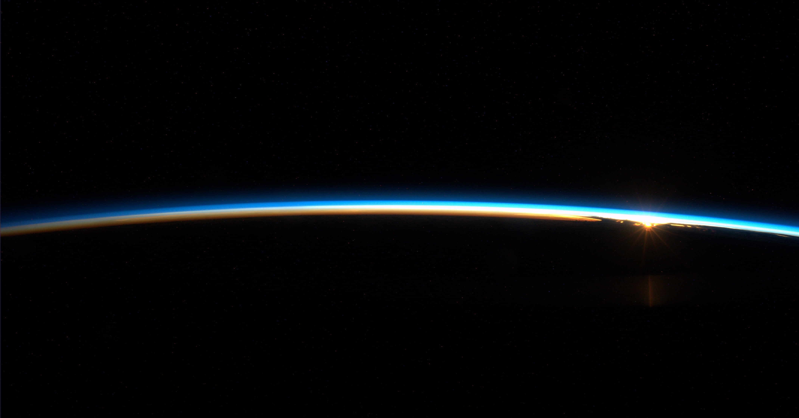
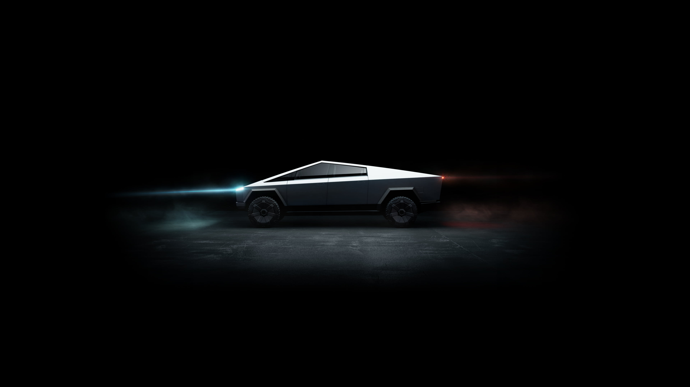
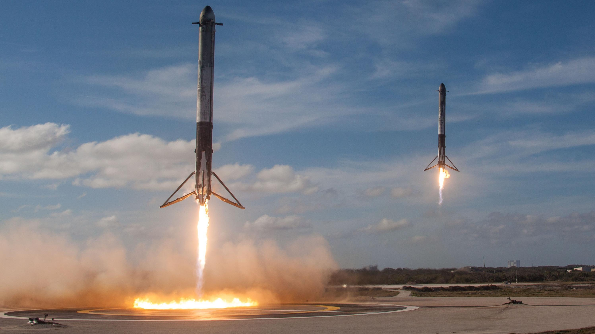
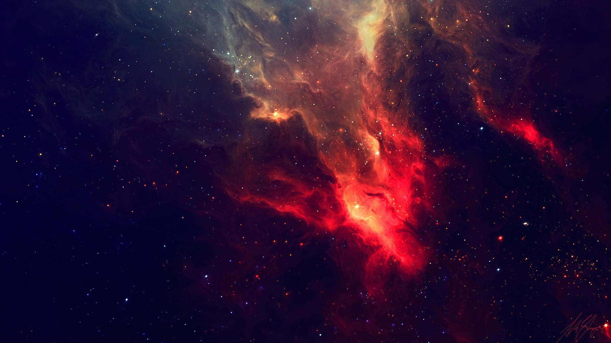

Neuralink
Co-founded in 2016. Develops implantable brain-computer interfaces. Its first human implant took place in January 2024.





Engineer and entrepreneur.
Chief executive of Tesla and SpaceX.
Over three decades he has founded or led companies in internet software, electric vehicles, reusable rockets, satellite communications and artificial intelligence.
Scroll to beginBorn in Pretoria, South Africa, in 1971, Musk moved to Canada in 1989 and later transferred to the University of Pennsylvania, where he earned bachelor's degrees in physics and economics. He began graduate study at Stanford in 1995 but left to start his first company; he did not complete a graduate degree.
His career moves from software to hardware. He co-founded Zip2 and X.com, founded SpaceX, invested in and later led Tesla, and co-founded Neuralink, The Boring Company and xAI. His roles differ by company: founder, early investor, chairman and chief executive.
These companies are built by thousands of engineers and operators. This page records Musk's role in them, not sole credit for their results.
Co-founds Zip2 with his brother Kimbal Musk, a web software company for newspapers. Compaq acquires it in 1999.
Founds X.com, an online financial services company. It merges with Confinity in 2000 and becomes PayPal; eBay acquires PayPal in 2002.
Founds SpaceX and serves as chief executive and chief engineer.
Leads Tesla Motors' first major funding round and becomes chairman of the board. Tesla was founded in 2003 by Martin Eberhard and Marc Tarpenning.
Becomes Tesla's chief executive. SpaceX's Falcon 1 becomes the first privately developed liquid-fuel rocket to reach orbit.
SpaceX's Dragon becomes the first commercial spacecraft to dock with the International Space Station. Tesla begins Model S deliveries.
A Falcon 9 first stage lands upright after an orbital launch. Co-founds OpenAI; he leaves its board in 2018.
Co-founds Neuralink and The Boring Company.
Tesla begins Model 3 deliveries, its first high-volume vehicle.
Falcon Heavy launches for the first time.
SpaceX's Crew Dragon Demo-2 carries NASA astronauts to the ISS, the first crewed orbital launch by a private company. Tesla begins Model Y deliveries.
Completes the acquisition of Twitter, later renamed X.
Announces xAI. Starship flies its first integrated test flight.
Neuralink implants its first human participant. SpaceX catches a Starship Super Heavy booster with its launch tower.
Electric vehicles, batteries and energy storage.
Musk joined Tesla as lead investor and chairman in 2004 and became chief executive in 2008. The company was founded in 2003 by Martin Eberhard and Marc Tarpenning.
Launch vehicles, spacecraft and reusable rockets.
Musk founded SpaceX in 2002 with the goal of lowering the cost of spaceflight. He is its chief executive and chief engineer.
Co-founded in 2016. Develops implantable brain-computer interfaces. Its first human implant took place in January 2024.
Founded in 2016. Builds tunnels for urban transport; its Las Vegas Convention Center Loop opened in 2021.
Announced in 2023. Develops the Grok family of AI models. Corporate links between xAI, X and Musk's other companies have changed; check primary sources for the current structure.
Company milestones achieved by large teams under Musk's leadership.
Each venture applies the same approach: reduce a hard problem to its physics, then build the factory that can solve it repeatedly.
Whether that approach holds for every new domain is still being tested.